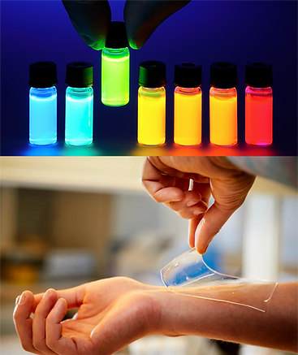
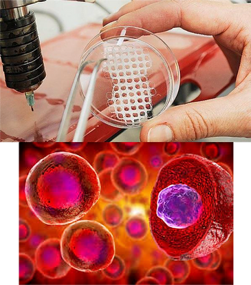
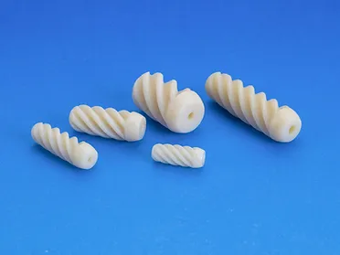

B-REAL
Biomaterials and Regenerative Engineering
Alliance Laboratory

- Biomaterials
- 
- Biomaterials are critical components of biomedical devices and products. A novel biomaterial may create new fields of study and opportunities to tackle unmet clinical problems. Biodegradable polymers have been long recognized for their uses in many biomedical applications. Our laboratories have special interest in establishing methodologies for developing biodegradable polymers for tissue engineering, drug delivery, and cellular/tissue bioimaging applications.
In recent years, citrate-based biomaterials have become an intense focus of research in the search of new functional biomaterials for solving pressing medical problems. Citric acid, historically known as an intermediate in the Krebs cycle, is a multifunctional, nontoxic, readily available, and inexpensive cornerstone monomer used in the design of citrate-based biomaterials. In addition to the convenient citrate chemistry for the syntheses of a number of versatile polymers that may be elastomeric or mechanically strong and tough, injectable and photocrosslinkable, fluorescent, phosporescence, and MR imaging-able, and/or tissue adhesive, citric acid also presents inherent anti-bacterial and anti-clotting characteristics, which make citrate biomaterials ideal for a number of medical applications. Furthermore, more recently studies have started revealing the intriguing biological regulation of citrates for tissue regeneration, especially for bone regeneration. All these features make citrate biomaterials promising and worth further developing. Yang lab has developed a methodology for the design and biomedical applications of citrate biomaterials. Specific applications include blood vessel, bone, and nerve regeneration, micro/nano-composites for orthopedic devices, bioinspired adhesives for wound healing, materials/cells/tissue bioimaging (fluorescence, MRI, photoacoustic imaging), immune cell-mediated cancer drug delivery, and point-of-care chloride sensing for cystic fibrosis diagnosis.
- Tissue Engineering and Stem Cells
- 
- Finding suitable biomaterials and tissue engineering strategies remains a challenge for tissue engineering. We are working on mulitple tissue engineering and stem cell projects. We are very interested in developing a design strategy for synthesizing new bioactive materials that may innately mediate stem cell differentiation through epigenetic regulation, immune modulation, and metabonegenic regulation.
Some specific tissue engineering topics inculde small diameter blood vessel tissue engineering, cardiac tissue engineering, bone tissue engineering and orthopedic devices, nerve tissue engineering etc.
- Medical devices
- 
- 1: Biodegradable coronary artery stents and gastrointestinal (GI) stents;
2: Orthopedic fixation devices;
3: Injectable biomaterials;
3: Biomimetic adhesives (bioglue) for surgery;
4: Multi-halide sensing;
5: Surgical devices for pain management;
6: Peripheral nerve grafts ;
7: Wound dressing;
8: Photodynamic therapy for wound treatment